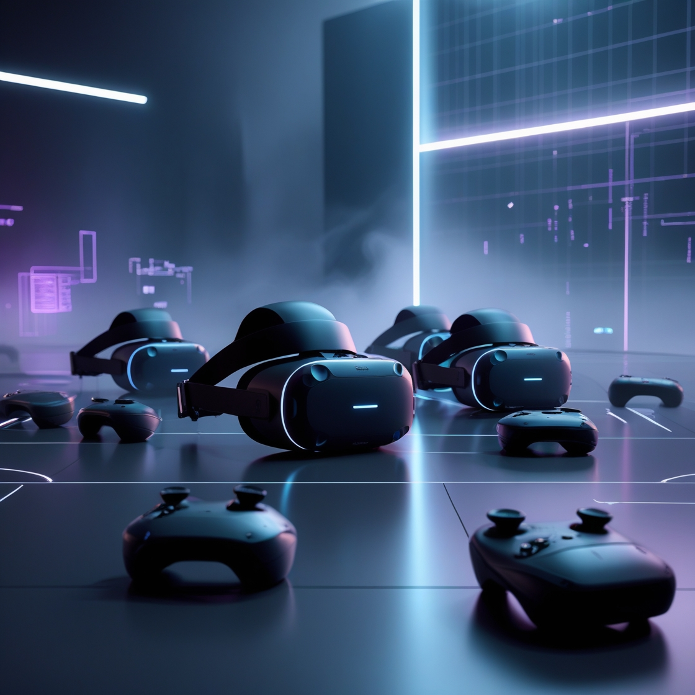

No vendemos objetos, diseñamos mundos: la revolución de la VR
y AR en el marketing ya comenzó.
El consumidor ya no quiere ver tu marca. Quiere entrar en ella.
Con la expansión de la realidad virtual (VR) y la aumentada (AR), las empresas tienen el poder de crear mundos, simular emociones y convertir cualquier espacio en un escenario de venta. Esta no es solo una herramienta, es la evolución del marketing como lo conocemos.
En esta nueva era, la interacción se convierte en inmersión, y la persuasión en experiencia.
Realidad Virtual y Realidad Aumentada como Estrategia de Marketing
En el mundo del marketing digital, la realidad virtual (RV) y la realidad aumentada (RA) han revolucionado la manera en que las marcas interactúan con los consumidores. Estas tecnologías permiten
experiencias inmersivas que generan mayor engagement, diferenciación y fidelización.
1. Experiencia Inmersiva y Engagement
La RV y la RA transforman la publicidad tradicional en experiencias interactivas. Los consumidores pueden probar productos en entornos virtuales antes de comprarlos,
lo que aumenta la confianza y reduce la incertidumbre en la decisión de compra.
Por ejemplo, marcas de moda han implementado probadores virtuales donde los clientes pueden visualizar cómo les quedaría una prenda sin necesidad de probarla físicamente.
2. Personalización y Diferenciación
Las marcas pueden ofrecer contenido personalizado basado en la interacción del usuario con elementos virtuales.
Esto permite una conexión más profunda con el consumidor y una diferenciación competitiva en el mercado.
Empresas como IKEA han desarrollado aplicaciones de realidad aumentada que permiten a los usuarios visualizar cómo quedarían los muebles en sus hogares antes de comprarlos.

3. Aplicaciones en Diversos Sectores
Desde el comercio electrónico hasta el turismo, la RV y la RA han demostrado ser herramientas efectivas para mejorar la experiencia del usuario. En el sector inmobiliario, los clientes pueden realizar recorridos
virtuales por propiedades sin necesidad de visitarlas físicamente, lo que agiliza el proceso de compra y reduce costos operativos.
4. Impacto en la Toma de Decisiones
El uso de estas tecnologías permite a los consumidores tomar decisiones más informadas.
Al interactuar con productos y servicios en un entorno virtual, los clientes pueden evaluar características, calidad y funcionalidad antes de realizar una compra,
lo que reduce la tasa de devoluciones y mejora la satisfacción del cliente.
5. Publicidad Interactiva y Gamificación
Las marcas pueden ofrecer contenido personalizado basado en la interacción del usuario con elementos virtuales.
Esto permite una conexión más profunda con el consumidor y una diferenciación competitiva en el mercado.
Empresas como IKEA han desarrollado aplicaciones de realidad aumentada que permiten a los usuarios visualizar cómo quedarían los muebles en sus hogares antes de comprarlos.
Realidad Virtual
La realidad virtual es una tecnología que crea entornos completamente digitales e inmersivos
donde el usuario puede interactuar con objetos, personas o espacios generados por computadora.
Entorno 100% digital.
Inmersión total (visual, auditiva e incluso háptica).
Requiere visores VR.
El usuario entra a otro mundo.
Realidad aumentada
La realidad aumentada superpone elementos digitales (imágenes, textos, animaciones)
sobre el mundo real, en tiempo real,
sin reemplazarlo. Se experimenta comúnmente a través de smartphones, tablets o gafas AR.
Combina lo real con lo digital.
No requiere visores pesados, muchas veces basta un celular.
Se usa para ampliar la información visual del entorno.
Interacción con el mundo físico aumentado por capas virtuales.
La revolución de la realidad virtual en el marketing
Ofrecemos soluciones de realidad virtual que transforman la forma en que las empresas interactúan con sus clientes.
Nuestras experiencias inmersivas son diseñadas para captar la atención y generar un impacto duradero.
Comience con el cliente explore nuevas realidades y ofrézcale experiencias inmersivas.